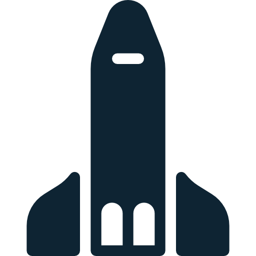
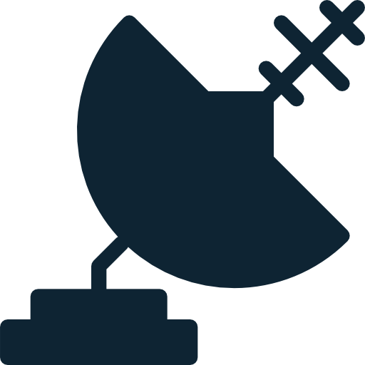
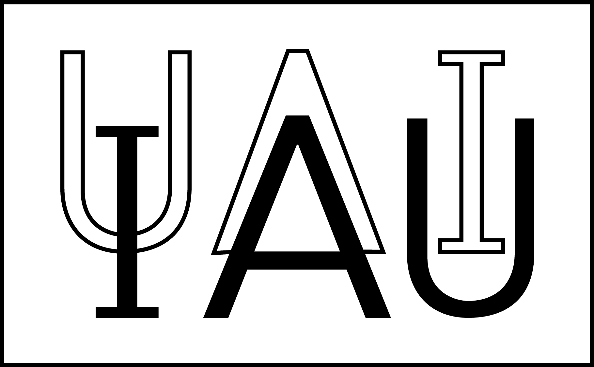

ENCONTRO NACIONAL DE ASTRONOMIA
NA FINLÂNDIA
SOBRE
DATA
29/07/2017
O Encontro Nacional de Astronomia na Finlândia (ENAF) é um evento anual promovido pela Associação de Astrônomos (ASAS). O ENAF é voltado à estudiosos e curiosos sobre o assunto, com o objetivo de promover um encontro afim de compartilhar informações e trazer discussões de temas atuais na astronomia. A astronomia é uma das mais antigas ciências. O encontro propicia o avanço e domínio sobre a área, estudo dos corpos celestes (como estrelas, planetas, cometas, nebulosas, aglomerados de estrelas, galáxias) e fenômenos que se originam fora da atmosfera da Terra. O ENAF também promove a já antiga preocupação com a evolução, a física, a química e o movimento de objetos celestes, bem como a formação e o desenvolvimento do universo.
 RADIOASTRONOMIA
COSMOLOGIA
SUPERNOVAS
AURORA BOREAL 
PALESTRANTES
Neil deGrasse Tyson
é um divulgador científico, dramaturgo e astrofísico dos Estados Unidos. É atualmente o Diretor Frederick P. Rose do Planetário Hayden no Centro Rose para a Terra e o Espaço e investigador associado do departamento de astrofísica no Museu Americano de História Natural
Michio Kaku
é um físico teórico estadunidente. É professor e co-criador da teoria de campos de corda, um ramo da teoria das cordas, que viria para ajudar na explicação da chamada Teoria de tudo, buscada por diversos físicos ao longo da nossa história, incluindo Albert Einstein. Michio Kaku defende a existencia de universos paralelos
Carl Sagan
é um cientista, astrônomo, astrofísico, cosmólogo, escritor e divulgador científico norte-americano. Sagan é autor de mais de 600 publicações científicas, e também autor de mais de 20 livros de ciência e ficção científica.
ORGANIZADORES


University of Helsinki
The Oldest and largest Institution of academic education in Finland, an international scienticif community of 40.000 students and researchers. In international university rankings, the University of Helsinki typically ranks among the top 100. The University of Helsinki seeks solutions for global challenges and creates new ways of thinking for the best of humanity.
International Astronomical Union
Foi fundada em 1919. A função principal do UAI é promover e salvaguardar a ciência da astronomia em todos os aspectos através da cooperação internacional. A UAI mantém relacionamento com organizações que incluem astroônomos amadores como seus membros.
PATROCINADORES
LOCALIZAÇÃO
Rovaniemi é a capital da Lapônia Finlandesa, próximo ao circo polar ártico
SUOMETSÄNTIE 33, 00720, HELSINKI, FINLÂNDIA
MAPA